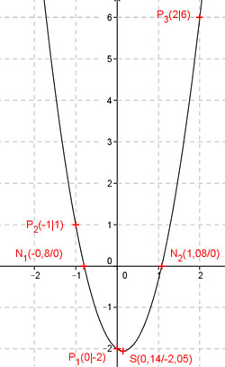

Aufgabe 85 Bestimmen Sie die Koordinaten des Scheitelpunktes S und der Nullstellen einer Parabel der Form y = ax2 + bx + c, wenn ihr Graph durch die Punkte P1(0|-2), P2(-1|1) und P3(2|6) geht? P1 ergibt: x = 0 und y = -2 Eingesetzt in y = ax2 + bx + c 0 = a * 02 + b * 0 + c c = -2 P2 ergibt: x = -1 und y = 1 und c = -2 Eingesetzt in y = ax2 + bx + c 1 = a * (-1)2 + b * (-1) - 2 a – b - 2 = 1 | +2 a - b = 3 (1) P3 ergibt: x = 2 und y = 6 und c = -2 Eingesetzt in y = ax2 + bx + c 6 = a * 22 + b * 2 - 2 4a + 2b - 2 = 6 | +2 4a + 2b = 8 (2) Lösung des linearen Gleichungssystems mit (1) und (2): (1) * 2 + (2) ergibt 2a – 2b = 6 4a + 2b = 8 --------------- 6a = 14 | :6 7 a = --- 3 In (1) eingesetzt: 7 --- - b = 3 |+b 3 7 --- = b + 3 | -3 3 7 --- - 3 = b 3 7 9 b = --- - --- 3 3 2 b = - --- 3 Gesuchte Funktion: 7 2 y = --- x2 - --- x - 2 3 3 Berechnung der Scheitelpunktkoordinaten: 7 2 7 y = --- x2 - --- x - 2 |:--- 3 3 3 3 2 6 --- y = x2 - --- x - --- 7 7 7 Quadratische Ergänzung : 3 2 1 1 6 --- y = x2 - --- x + (---)2 - (---)2 - --- 7 7 7 7 7 2 1 1 Mit x2 - ---x + ----- = (x - ---)2 7 49 7 3 1 1 42 --- y = (x - ---)² - ---- - ---- 7 7 49 49 3 1 43 3 --- y = (x - ---)2 - ---- |:--- 7 7 49 7 1 43 y = (x - ---)² - ---- 7 21 Scheitelpunktkoordinaten abgelesen : 1 43 S(---|- ----) oder S(0,14|- 2,05) 7 21 Berechnung der Nullstellen (y = 0) 7 2 7 0 = ---x2 - ---x - 2 |:--- 3 3 3 2 6 0 = x2 - --- x - --- 7 7 p, q – Formel : 2 6 p = - --- ; q = - --- 7 7 x1,2 = 0,14 ± 0,94 x1 = 0,14 – 0,94 = - 0,8 x2 = 0,14 + 0,94 = 1,08 N1(-0,8|0) ; N2(1,08|0) 